Owner: Kunthaka Nilaweera
A collection of notes, scripts, and frameworks to help operationalize a VMware Cloud Foundation 9.1 environment.
An interactive page for tracking VCF adoption and use cases across organizations. Click a square to cycle its status, tracked separately for Usage and Use Case per component. Export the results to Excel or CSV, or re-import a saved file to carry on later.
An MVP set of day one alerts across availability, performance, and capacity, a “deny all, permit by exception” policy strategy, and the five dashboards worth building first.
Turning VCF 9 alerts into tracked, owned incidents. Step through checks covering the pipeline, ITSM integration, escalation model, response playbooks, and notification rule strategy.
Keeping the platform current and secure through patching, password, and certificate management, across the depot and Bill of Materials foundation, upgrades, and operating cadence.
Mapping how a VM actually gets delivered. Build the provisioning swimlane with the customer, put a time against every step, see how much of the lead time is queue, and mark what VCF 9.1 automation removes.